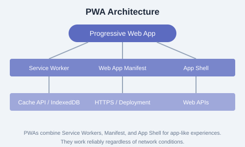

← Back to Tutorials

Progressive Web Apps Tutorial: A Complete Guide
Your comprehensive guide to building Progressive Web Apps — reliable, fast, and engaging web applications that work offline and feel like native apps. Each chapter includes explanations, code examples, diagrams, and a hands-on exercise.
Table of Contents
1. Welcome Introduction, What are PWAs, Why PWAs, How PWAs Work 2. Getting Started Prerequisites, Dev Environment, First PWA, Hello World 3. Foundations Core Concepts, Ecosystem, Best Practices, Web App Model 4. App Design UI/UX Design, Responsive Layouts, Accessibility, Look & Feel 5. Assets & Data Static Assets, Data Management, Optimization, Images & Fonts 6. Service Workers Basics, Lifecycle, Event Handling, Registration, Scope 7. Caching Strategies Cache API, Offline-first, Network-first, Stale-while-revalidate, Advanced Patterns 8. Serving Content Hosting, HTTPS, Deployment, CDN, Security Considerations 9. Workbox Setup, Features, Routing, Precaching, Runtime Caching, Advanced Usage 10. Offline Data Storage Options, IndexedDB, Background Sync, Offline-first Architecture 11. Installation Web App Manifest, Install Prompt, Customization, Desktop PWA 12. Manifest Deep Dive Manifest Properties, Icons, Splash Screen, Display Modes, Scope 13. Install Prompt beforeinstallprompt, Custom Prompts, Deferred Prompts, Analytics 14. Updates & Enhancements Update Strategies, Versioning, Notification Updates, Progressive Enhancement 15. Progressive Enhancements Feature Detection, Graceful Degradation, Enhancement Layers 16. Detection & Integration Feature Detection, Platform Detection, Integration APIs 17. OS Integration Share Target, File Handling, URL Handling, Protocol Handlers 18. Window Management Display Modes, Window Controls Overlay, Multi-window, Screen APIs 19. Experimental Features Cutting-edge APIs, Origin Trials, Future Capabilities 20. Tools & Debugging DevTools, Debugging PWAs, Testing, Performance Audits 21. Architecture & Design Patterns App Shell, PRPL Pattern, RAIL Model, Scalability 22. Complexity Management State Management, Code Organization, Bundling, Complexity Patterns 23. Capabilities Push Notifications, Background Sync, Badging, Media, Payments, WebRTC 24. Conclusion & Resources Summary, Quick Guide, Cheatsheet, Study Plan, Certification 25. References APIs, Specifications, Tools, Resources, Community
Start Learning →